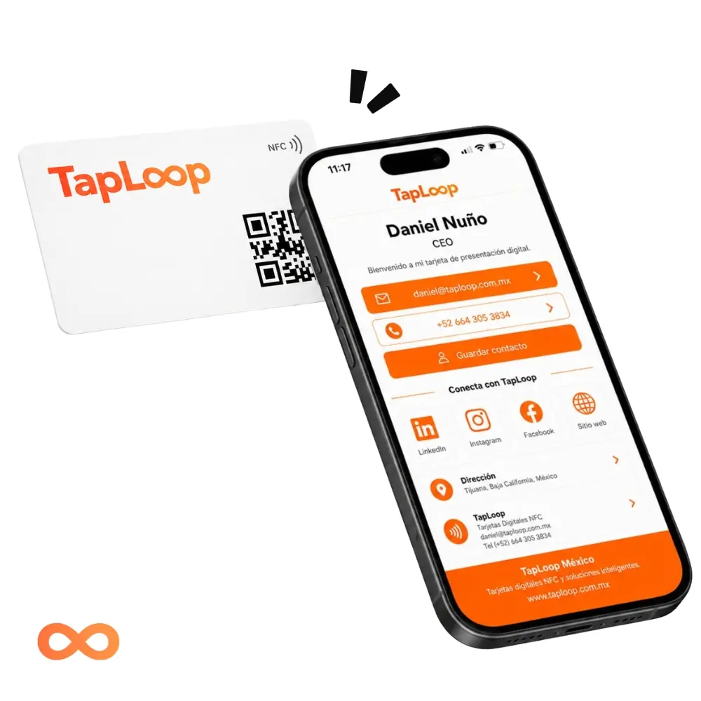
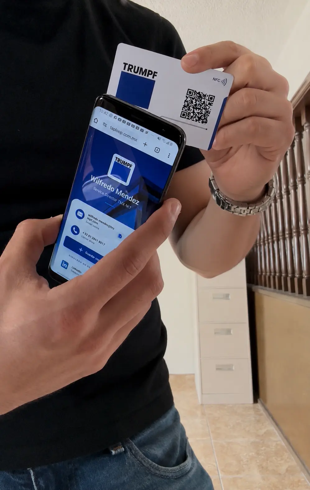
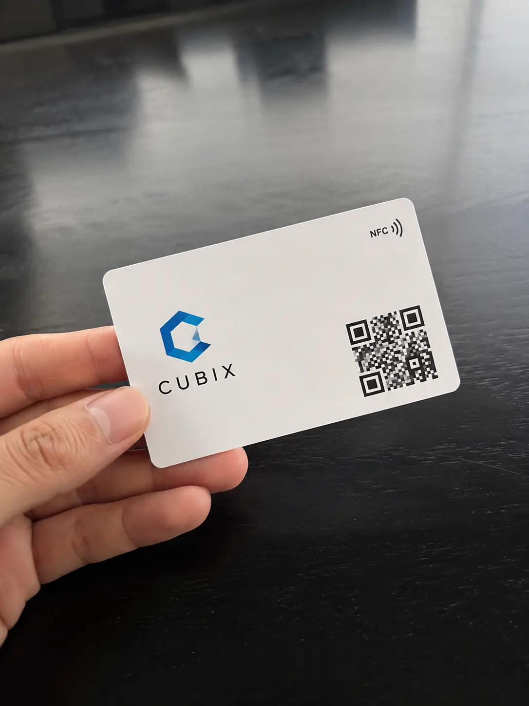
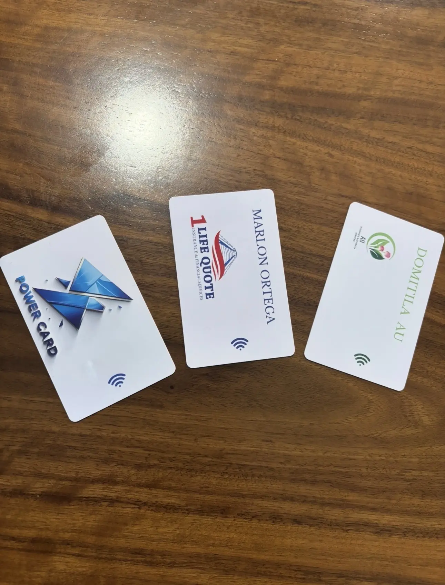

Comparte con un toque
Acerca la tarjeta a un teléfono compatible para abrir tu perfil digital en segundos.

Tarjeta NFC PVC + Perfil digital personalizado
Tarjeta de presentación digital NFC en PVC, personalizada con tu marca y conectada a un perfil digital para compartir contacto, WhatsApp, redes y enlaces en segundos.
PVC premium para compartir tu contacto, WhatsApp, redes y sitio web con un solo toque. Diseñada para profesionales, vendedores y emprendedores que quieren causar una mejor primera impresión.
Hecha para vender mejor. Una sola tarjeta física, un perfil digital siempre actualizado y una presentación mucho más profesional.
Enviamos a todo México por DHL. El tiempo estimado de entrega es de 5 a 7 días hábiles. Recibes guía de rastreo y acompañamiento para dejar tu tarjeta lista.
Después de solicitar tu cotización, un agente de TapLoop te guiará de inicio a fin para personalizar tu tarjeta con nombre, logo, colores, cargo, QR y enlaces de tu perfil digital. El proceso es rápido, claro y ágil.
Tarjeta de presentación digital NFC
La tarjeta NFC Digital TapLoop combina una tarjeta física personalizada con un perfil digital accesible por NFC o código QR. Tu cliente puede guardar tu contacto, abrir WhatsApp, visitar tus redes y consultar tus enlaces desde el navegador, sin instalar una aplicación.
Acerca la tarjeta a un teléfono compatible para abrir tu perfil digital en segundos.
Concentra nombre, cargo, teléfono, WhatsApp, correo, redes, sitio web, ubicación y catálogo.
El código QR abre el mismo perfil digital y funciona como alternativa universal al NFC.
Diseñamos, programamos y enviamos tus tarjetas NFC listas para usar.
Logo, datos de contacto, enlaces y cantidad de tarjetas.
Iniciar mi propuestaRecibes 2 propuestas originales de tarjeta NFC y perfil digital.
Pulimos el diseño contigo hasta dejarlo listo para producción.
Probamos el NFC, verificamos el QR y enviamos la tarjeta lista para usar.

Cómo la utiliza el cliente
La otra persona solo acerca su teléfono o escanea el código QR para abrir tu perfil digital y guardar tu contacto al instante.
O permite que escaneen el código QR de tu tarjeta.

El teléfono muestra tu perfil con botones de contacto, redes y enlaces.

Tu cliente puede guardar tu contacto, enviarte WhatsApp o visitar tu sitio web.

Reseñas
Profesionales y equipos la usan para compartir contacto, redes y enlaces sin perder el momento.

★★★★★"La uso en visitas con clientes y me ha ayudado a que guarden mi contacto al instante. Se ve mucho más profesional que mandar datos por mensaje."
Alejandra RuizAsesora inmobiliaria
★★★★★"En expos me ahorro muchísimo tiempo. En un toque ya tienen mi portafolio, WhatsApp y formas de contacto."
Karen MedinaWedding planner
★★★★★"Para ventas automotrices funciona perfecto. Dejo catálogo, promociones y WhatsApp sin tener que imprimir nada nuevo."
Jorge SalinasVentas automotricesLo más importante antes de solicitar tu tarjeta NFC Digital.
Es una tarjeta física de PVC con tecnología NFC y código QR que abre un perfil digital personalizado con tus datos de contacto, WhatsApp, redes sociales, sitio web y enlaces importantes.
No. El perfil digital se abre directamente en el navegador de un teléfono compatible al acercar la tarjeta o escanear el código QR.
Sí. La tarjeta y el perfil digital se personalizan con tu logo, nombre, cargo, colores, datos de contacto y enlaces principales.
Sí. Según la solución contratada, puedes actualizar datos y enlaces del perfil digital sin reemplazar la tarjeta física.
Funciona en teléfonos compatibles con NFC. Además, el código QR permite abrir el mismo perfil digital desde la cámara del teléfono.
El tiempo estimado es de 5 a 7 días hábiles después de validar el diseño y los datos finales. El plazo puede variar según la cantidad y el destino.
Cuéntanos qué diseño buscas y nuestro equipo preparará tu propuesta personalizada.